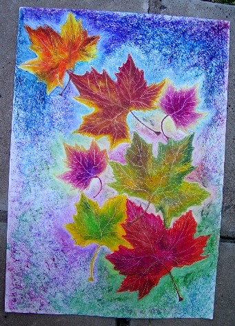
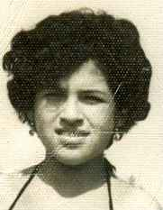
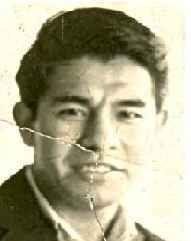

Antes
de ti, después de ti...
Antes
de ti, después de ti...
 Pintura con pasteles al óleo de Mirta Beatriz Campos (Mendiolaza, Córdoba, Argentina) |
¡Nuevo! MOMENTOS
MOMENTOS
Hacía horas que llevaba sentado en el sillón de su pequeña habitación que estaba apenas iluminada por la tenue luz de una endeble lámpara. No sabría
decir si era de día o de noche de un lunes, miércoles o viernes. Afuera sentados en las bancas del parque un grupo de amigos del barrio estaban reunidos libando y cantando
a viva voz añosos valses. Pero eso a él poco o nada le importaba. Solo tenía oídos para los boleros añejos que absorto escuchaba y canturreaba.
Con una de sus manos cogía una copa de vino a medio llenar y en la otra tenía apretujada la hoja que acababa de arrancar del viejo calendario.
Sus ojos vidriosos miraban fijamente esa última hoja que a duras penas permanecía pegada en la despintada pared de su sala y que le anunciaba el pronto final de otro año.
Fue entonces que la niebla de la nostalgia propia de una navidad que asomaba terminó por turbarlo y devolverlo a momentos pasados, a sus recuerdos, a sus amores,
a los desencuentros, a las tristezas y las ausencias dolorosas.
Poeta reputado, escritor de fina prosa y periodista de nota, su vida fue una eterna fiesta. Amigo de apreciadas virtudes, dicharachero y lisonjero impenitente
no hubo damita que no sucumbiera a sus encantos. Pero esos fueron momentos pasados. Hoy cuando la vida se encargó de pasarle la factura por los
excesos y abusos cometidos en una permanente e incontrolable bohemia, su realidad era otra: vivía en solitario, solo los libros de su frondosa biblioteca
compartían su soledad y aun cuando trataba de conservar su otrora jovialidad no fueron pocas las ocasiones que sintió el viento frío de la soledad, después
de muchos amoríos vanos y sendos fracasos matrimoniales, su otrora sonrisa había quedado congelada en alguna descolorida foto.
Entonces con laboriosidad artesanal empezó retrotraer su memoria deteniéndose en cada momento de su vida que él consideraba
importante y los apartaba de lo irrelevante. Era como si tratara de armar una suerte de rompecabezas buscando la pieza que le faltó para ser feliz.
Fue inútil. Finalmente el repaso lo convenció que cada momento vivido fue intenso, cierto, a veces doloroso pero necesario.
Que nada había que reprochar a la vida que le había brindado todas las oportunidades para ser feliz pero que su disipada vida lo hizo desperdiciar.
¿Y ahora?, se preguntó…
Luego de unos minutos, con decisión abandonó el sillón, buscó música más alegre y abrió las ventanas encontrándose con ese fugaz instante cuando la
madrugada está por ceder su oscuro espacio a una mañana nueva y prometedora: “Hmmm…la hora azul” murmuró sonriendo…
Entonces es hora de buscar nuevos momentos, se dijo, es hora de cambiar de actitud, de enseriarse,
de buscar compañía para compartir momentos que se vuelvan eternos.
Es el momento en que los recuerdos sean solo eso: recuerdos y que no signen mi vida futura.
Y como “María Sueños” el poeta comenzó a desandar caminos, persiguiendo su estrella entre senderos dormidos.
Escarpando cordilleras y bebiendo de las vertientes para llegar a la vida. Y en busca de esa nueva vida el vate echose a andar..
Algunos Aportes Anteriores
AMOR EN TIEMPOS DE INTERNET
Como siempre, aquel día Christian Vallejo, esperaba la noche. Vestía, por arriba, cafarena guinda y un pantalón vaquero azul que sin duda habían conocido
mejores épocas. Por abajo las cosas no eran mejores. Era evidente que sus zapatillas negras con pasadores blancos no combinaban con las medias marrones con
rayas amarillas. Pero eso poco o nada le importaba a este veterano y apasionado periodista. Porque Christian tenía otras pasiones.
También era escritor, poeta, filósofo y, hay que señalarlo, bailarín frustrado. Pero por sobre todas las cosas era un consumado ajedrecista.
Christian tenía 64 años y era redactor principal del diario La República. Soltero a ultranza (el matrimonio es una tontería:
para qué casarse si siempre uno termina por separarse, decía, muy seguro de sus palabras).
Desde el mediodía, hora en que se despertaba, iniciaba su recorrido por los cuatro pisos del edificio del periódico limeño.
Camino a su oficina iba
absolviendo preguntas o consultas de todo tipo hechas por bisoños y empeñosos periodistas.
Luego revisaba sus apuntes, hacía algunas llamadas telefónicas y, cigarro en mano, se ponía a escribir.
Después de un frugal almuerzo, terminaba arrellanado sobre el sofá de cuero marrón ubicado en el segundo piso.
Apenas empezaba la lectura de una de sus revistas de ciencia, se quedaba dormido. Luego de despertarse
volvía a escribir y al culminar su nota se entregaba a una última siesta.
Cerca de la medianoche Christian se desperezaba y de uno de los bolsillos de su guayabera sacaba la segunda
caja de cigarrillos del día. Mientras el cigarro humeaba entre sus huesudos dedos amarillos, se sentaba frente a una
de las computadoras e inmediatamente buscaba un sitio web para jugar ajedrez. Solo en esos momentos su rostro se
iluminaba y como niño en Navidad, se sentía inmensamente feliz. Había enfrentado a innumerables adversarios y a todos
había vencido. Sin embargo en cierta ocasión le tocó una rival de fuste. En la primera partida quedaron empatados y luego
perdió tres partidas seguidas. Christian quedó impresionado por la calidad de su juego y por el nombre de su adversaria: Atenea.
Entonces, como jugando, él le propuso intercambiar e-mails “para conocernos mejor” lo que fue aceptado por ella.
Poco a poco, se olvidaron del ajedrez e ingresaron al salón de las confidencias, antesala del amor.
A partir de entonces Christian empezó a mirar y tocar a la computadora de manera diferente: cual virtuoso pianista posaba con
delicadeza sus dedos sobre el teclado y daba rienda suelta a lo mejor de su inspirado corazón.
Así fueron pasando los días y todo
caminaba de maravillas...hasta que ella le pidió una foto: “Ya conozco tu alma, ahora quiero conocerte físicamente” le dijo.
Él no supo que responder. Lo único que se le ocurrió fue tomar la foto de uno de sus jóvenes colegas y ponerla en la pantalla.
Se trataba de Jaime Tipe, periodista de la revista El Gráfico Perú, al que Christian convirtió en un joven cirujano de 35 años.
Indudablemente el joven Tipe no se parecía en nada al Vallejo pelado de la cabeza, que lucía apenas tres dientes, grandes ojeras,
que caminaba como Chaplin y reía estruendosamente. Pero Atenea ya estaba flechada y en su deseo de conocerlo más lo jaqueaba con
preguntas. “Nunca antes me habían escrito tan lindo” le confesaría en uno de sus correos.
Ganado por un sentimiento de culpa Christian quiso reparar su mentira e intentó decirle la verdad...pero de a poco.
“No la quiero perder” argüía en su defensa. Entonces colocó otra foto en la pantalla. Esta vez figuraban
Tipe y Vallejo, que aparecía como su “papá”. Atenea le respondió: “felizmente no te pareces en nada a tu papá. Disculpa pero es bien feito”.
Un día, ella plena de emoción le comunicó que había decidido dejar España y venir a Perú. “Estoy ansiosa por conocerte personalmente” le dijo.
Lejos de alegrarlo, esta situación desconcertó totalmente a Christian que no atinaba a nada. ¿Qué hago, por favor, qué hago?
Preguntaba a sus jóvenes colegas que lo miraban con ojos de reproche. “Disculpe maestro, pero usted nos enseñó que solo debemos decir la verdad” le espetaban.
Vencido y en silencio Christian no tuvo más opción que sentarse ante la computadora y empezar a redactar lo que parecía su epitafio:
“La verdad es que soy viejo, calvo, feo como un sapo, apenas tengo dientes y lo peor es soy un periodista pobre, muy pobre...pero que se
ha enamorado de ti. Si no me respondes lo entenderé. No te preocupes, mis afectos hacia ti seguirán intactos. Te pido perdones mi insinceridad”.
Cuando terminó de escribir era medianoche y las luces de la redacción ya estaban apagadas. Era patético ver a Christian demudado y con su mano
aferrada al mouse como negándose a enviar el mensaje. Cuando finalmente hizo click parecía haber envejecido de manera repentina.
A paso lento, como si asistiera a su propio funeral, se dirigió a su pequeña habitación. A partir de ese día Christian desapareció de la escena.
Se recluyó en su cuarto de la azotea del edificio de La República teniendo como únicos compañeros sus libros y cigarrillos.
Para evitar preguntas incomodas salía después de medianoche. Abría su correo y al no encontrar alguna señal de su amada, regresaba a su cubil con
la frustración pintada en el rostro. Como sus cigarrillos, Christian iba consumiendose. Por días casi no probada alimentos. Solo deseaba que la computadora
le devolviera una respuesta que pudiera acabar con su angustia. Así pasaron dos meses pero él se negaba a abandonar su rutina. Hasta que una madrugada,
cuando se disponía a tachar otro día en el almanaque que colgaba en la pared, Christian escuchó fuertes golpes en su puerta. Se acercó y muy molesto
preguntó: ¿Quién es? ¿Acaso no saben la hora que es? ¿Además qué maneras son esas de tocar?, gritó con reniego. No obtuvo respuesta alguna.
Otra vez, con más fuerza e insistencia, tocaron la puerta. Entonces, con cara de pocos amigos, abrió la puerta para increpar al inoportuno.
Débil y soñoliento, Christian se sobó varias veces los ojos para observar mejor. Creía estar viendo a la diosa Atenea que en forma de mujer y luciendo un
vestido negro que resaltaba la blancura de su piel, lo miraba con una tierna y amorosa sonrisa. Pero no. Era Rosi María Pérez, una hermosa española que en vez
de alas, traía dos maletas en las manos. Ella en los últimos cuatro meses había trabajado hasta tres turnos a fin de reunir el
dinero necesario para comprar el boleto de avión que la traería a los brazos de su amado.
Desde ese día, otra vez con vida, Vallejo empezó a recorrer los cuatro pisos de La República, pero ahora con una amplia sonrisa y acompañado de su “diosa”.
Pero como certeramente apuntó uno de sus colegas “Cualquiera hubiese pensado que era un anciano paseando con su enfermera”. Y no se equivocaba:
Christian estaba convaleciente de amor.
Al cabo de 30 días se casaron y se fueron a vivir al tradicional distrito de Barranco. Aunque la felicidad era evidente en los dos, en él desbordaba:
“Rosi es guapa, inteligente, querendona, y hace la comida muy bien, hace la casa muy bien y sobre todo, hace el etcétera muy bien", aseguraba con su risa estruendosa.
Christian, ahora había dejado de fumar. “Es que tengo que cuidarme” decía con rostro de preocupación. Pero lamentablemente ya era tarde. Por años, desde que
le detectaron cáncer, su médico le había recomendado que deje los cigarros. “De algo hay que morir”, le respondía Vallejo rehuyendo el consejo.
Pero ahora que conocía la felicidad y se aferraba a la vida, su desgastado y enfermo organismo ya no respondía al tratamiento.
Cuando Christian murió dejó muchos amigos, un libro sin culminar y una mujer a quien nadie podía consolar. A cada saludo de pesar, ella respondía:
"Fue el ser más maravilloso que he conocido. De eso estoy completamente segura". Tres meses después Rosi emprendió el retorno a sus pagos.
Lo hizo de la misma manera como llegó: sorpresivamente. En una de sus maletas llevaba la foto de su matrimonio y su vestido de bodas.
Pero su mayor tesoro era el manuscrito que Christian le había entregado pocas horas antes de fallecer y que ella leía y releía mientras vanamente, intentaba contener las lágrimas:
“Nunca tuve tantos deseos de vivir como ahora. Pero vivir, no para mí, sino vivir para ti...para compensarte en algo la enorme dicha que me hiciste conocer.
Perdóname por causarte este dolor. Solo te pido que no sufras. Mi partida no debe ser motivo para hacerlo. Todo lo contrario.
Recuerda que cada uno de nosotros viene a este mundo con una misión. Y la tuya, amada Rosi, fue hermosa, casi divina.
Fuiste un ángel destinado a resucitar los sentimientos de un hombre que nunca conoció el amor.
A darle un sentido a mi vida. A pintar mi cielo de azul. Si, fuiste un oasis en este páramo que era mi vida antes de conocerte.
¡Por Dios Rosi cuanto amor trajiste a mi vida en tan poco tiempo! De mis casi 65 años vividos solo me llevo de recuerdo aquellos días que viví a tu lado.
Ah, y otra cosa igualmente importante: Me hiciste creer en la existencia de un Dios amoroso y generoso.
Un Dios que pese a nuestros errores y agravios, nos sigue amando. Ahora, adorada Rosi, antes de ir a su encuentro, quiero que mis últimas
palabras te expresen del inmenso amor que siento por tí...TE AMO”
Christian
L AMOUR
Llevaba horas, sentado al borde la carretera esperando entre inquieto e impaciente, cualquier bus que lo llevara a cualquier parte.
Muy temprano había abandonado su casa sin avisar a nadie ni dejar nota alguna.
Había decidido buscar un lugar que lo distanciara de la ciudad, esa ciudad que a veces se mostraba tan fraterna como impía, tan mística como transgresora.
Aunque, hay que decirlo, a esa altura de su vida aquellos usos o costumbres ya poco o nada le importaban ya que a él solo le interesaba
que respetaran sus espacios y su albedrío para elegir o desechar. Por todo equipaje llevaba su vieja guitarra, una mochila con sus libros, una libreta
de apuntes y otra que contenía bártulos personales.
Mientras aguardaba trató de despojarse de todo recuerdo. Fue inútil. La imagen de esa bella como díscola mujer la llevaba impregnada en su piel.
No podía negar que después de mucho tiempo ella supo despertar sentimientos que creía sepultados. Pero algo sucedió.
Algo, que aún no sabía ni podía explicarse pero que ocasionó un indeseable distanciamiento. No recordaba, o no quería recordar, que pasó;
si fue ella o si fue él quien hizo abandono de la hermosa aventura que disfrutaban, solo recordaba que se amaron hasta la locura.
Pero eso era historia, se dijo. Ahora solo quería sentir una libertad que sentía haber perdido al entregarse a la mujer que amó.
Entonces decidió salir en busca de lo que sería su paraíso personal, de un lugar donde sentirse libre de sueños frustrados, de dolorosos desamores.
Iba en busca de su paraíso imaginario. Luego de un largo viajar (nunca contó los días, no tendría sentido, se decía), llegó a un pueblito de Huaraz
donde a lo lejos divisó el lugar perfecto. Era un pequeño villorrio situado en una inhóspita zona rural.
Y en aquel valle lejano, escondido;
y debajo de una colina y arriba de un arroyuelo, empezó a construir no sólo su cabaña, sino también su mundo.
Apenas terminó de construir su cabaña, y quitando abrojos, empezó la tarea de labrar la tierra: sembró plantas y rosedales
que cada mañana cuidaba con amoroso afán. A media mañana preparaba su comida y las tardes las usaba para leer.
Culminaba la noche rasgueando su gastada guitarra. Sin embargo conforme fue pasando el tiempo, los días y las noches
se le tornaron monótonos, vacíos y helados. Y fue cuando sintió otra vez el frío de la soledad. Entonces se dio cuenta de que se
había convertido en prisionero de una supuesta libertad. Una libertad que no le permitía compartir sensaciones mutuas,
sentimientos, emociones compartidas. Entonces tomó una firme decisión:
Llevaba horas, sentado al borde la carretera esperando entre inquieto e impaciente y ansioso,
cualquier bus que lo devolviera a los brazos de su amada.
PARA MORIR IGUALES
Son las cinco de la madrugada y estoy releyendo tus notas.
Y sabes? me apenan tus palabras, me entristecen profundamente porque hablas como si estuvieras en la calle de enfrente, como si habitaras del otro lado del planeta.
Después de confiarme tus cuitas, que -entérate- ya las sabía, me pides que me aleje de ti, que te olvide.
No; querida, ni pensarlo. Inútil e imposible hacerlo. Hay cosas que las llevas cosidas al alma como la etiqueta de una camisa y no puedes arrancarla ni recortarla
para que no exista, a menos que quieras vivir con un hueco por donde se te vea la piel herida.
Me hablas de una delgada línea que existe entre la admiración y la pasión.
Quizás, digo yo, sea la misma línea que, dicen, hay entre el amor y el deseo.
Pero… ¿qué es más fuerte, más valedero, más hermoso, más mortal?
¿El amor o el deseo? Algunas personas, ironías del destino, que han sido más dados a lo carnal, y que como nosotros ahora recorren las callejas
de la adultez, van a decir que el amor es lo más trascendental, lo mejor, lo más puro, que es la verdadera línea.
Pero, y perdóname si me excedo, yo creo que
el deseo, impetuoso, demoledor, intransitable a veces, pero imposible de abandonar, es el verdadero amor.
Porque lo da todo y lo quiere todo.
Es egoísta y generoso, violento y tierno, arriesgado y temeroso. Que los amantes lo mismo aman en una cama que en un
parque, porque son conscientes que así
como no pueden evitar mirar, no pueden evitar sentir. Y que lo que sienten… es para siempre.
Sabes? muchas veces la vida se torna ingrata y paradójica. Y la felicidad, esa sensación tan agradable como elusiva, con el pasar
de los años se nos hace utópica.
Conocerte a estas alturas de mi vida, ha sido, es, una de las cosas más maravillosas que me han sucedido.
Recuerdo que en nuestra primera cita me confesaste
que fueron mis escritos los que te conquistaron y yo te respondí que me agradaste y te admiré desde nuestra primera conversa por “inbox”.
Y nos entregamos el uno al otro, con locura juvenil, incontrolable, compartiendo pasión con amor puro, con amor del bueno.
Pero la felicidad nunca ha sido completa. No para mí. Aunque no me lo dijiste yo sabía que por esos días estabas sometidas
a evaluaciones médicas para determinar
las extrañas causas de una fatiga que se te estaba haciendo crónica y que al finalizar los exámenes,
el diagnóstico te devastó y decidiste recluirte en tus pesares y dolores.
Y ahora en tus mensajes me pides, me suplicas, que me olvide de ti. Que es lo mejor para los dos.
Déjame decirte, confesarte sería la palabra apropiada,
que desde hace un par de años, vengo manteniendo una desigual lucha contra un
cáncer que, pese a las terapias
a las que me someto, me está ganado la batalla. Recuerdas cuando nos prometimos que nada ni nadie podría separarnos?
Bueno cariño, creo que llegó
la hora de honrar nuestras promesas. Quiero vivir a tu lado, quiero que respires de mi aire, anhelo mirarte, deseo amarte,
acariciarte aunque sólo sea
con la mirada.
Mientras me alcance el tiempo, quiero devolverte un poco de la felicidad que conocí a tu lado.
Quiero vivir a tu lado.
Quiero morir a tu lado.
(para este cuento me he tomado la libertad de glosar algunas líneas de una extraordinaria nota del periodista Félix Delgado)
SIEMPRE HAY UN MAÑANA
Llevaba más de cuatro horas sentado en una endeble y vieja banca de la plazuela de Monserrate.
Sin saber cómo, sus ahora dubitativos pasos lo habían llevado hasta su antiguo barrio.
En medio de la confusión que lo embargaba en esos momentos recordó que horas antes su médico le había informado que su enfermedad era terminal
y que su expectativa de vida era de corto plazo.
También recordó que cuando abandonó el consultorio tenía la mente en blanco y que no sabía donde ir.
Que lo único que deseaba en esos momentos era no regresar a su casa, una casa donde nadie lo esperaba.
Entonces que hago aquí? se preguntó mientras trataba de encontrar alguna respuesta.
Luego de algunos minutos sonrió al darse cuenta de que había reaccionado como los elefantes que regresan a su pago natal para morir.
Volvió a sonreír. Luego, más calmo, mientras su mirada recorría cada una de las viejas casonas, empezó a recordar los momentos que disfrutó durante los años que vivió allí.
Se acordó de cada uno de sus amigos, del barrio, del colegio, del catecismo.
Qué tiempos aquéllos se dijo, al recordar aquellos ardorosos partidos que jugaban con una pelota de trapo.
Y que después, cuando se mudó, los encuentros con esos amigos se fueron espaciando debido a estudios, trabajo o compromisos con nuevos amigos.
Y, aunque el tiempo fue pasando, en su memoria siempre permanecían aquellos momentos de sus años primeros.
Entonces, ganado por la nostalgia, entrecerró sus ojos y de su mente fluyeron los recuerdos de su infancia.
Pero al abrir los ojos encontró que todo era diferente: que en su barrio habían otras personas, otras costumbres, otro lenguaje.
Nada es igual, murmuró con rabia cuando se disponía a abandonar la pequeña banca, su barrio y sus recuerdos.
Pero, de pronto se acordó de aquella jovencita de figura menuda, mirada misteriosa y de parco hablar, que despertó sus primeras emociones.
Entonces empezó a recorrer casa por casa preguntando por ella, pero nadie supo darle razón de su paradero.
Sólo se enteró que se había casado, luego divorciado y que tenía una hija.
En ese momento se propuso dedicar todo su tiempo en buscarla hasta encontrarla; para decirle lo que su timidez infantil le impidió hacerlo.
Luego de una intensa búsqueda logró conocer la dirección de su casa y, además, se enteró que vivía sola. Así las cosas, sólo le quedaba visitarla.
Cincuenta años después, se encontraba parado frente a la casa.
Sin embargo ya habían transcurrido 15 minutos y él continuaba inmóvil, quieto, sin atreverse a tocar el timbre.
Pero no era temor ni duda lo que ocasionaba esa parálisis. En medio de ese su silencio se estaba preguntando si resultaba correcto buscarla ahora que poco o nada tenía por ofrecer.
Ahora que sus mañanas eran cortas e inciertas. Ahora que en vez de brindar felicidad solo ocasionaría preocupaciones, tristezas, llantos.
Entonces un sentimiento de culpa asomó por su mente y decidió desistir aunque una parte de su ser, aún lo deseaba.
Sin embargo cuando iniciaba el retorno hacia su soledad, una delicada voz detuvo sus pasos: ¿Alonso?
Entre sorprendido y emocionado dio la vuelta para encontrarse con la misma jovencita de figura menuda y mirada misteriosa que nunca pudo olvidar.
Algo Personal
PARA TI
Y bueno, ya estamos aquí…llegamos a diciembre mes preámbulo de un nuevo año. Y, no sé tú, pero yo, fiel a una añosa costumbre, por estos días empiezo con la tarea
de repasar los días, los meses y los años, vividos en estas (varias) décadas de vida. Es decir, a realizar una suerte de “inventario” de las ocurrencias y sucesos que de
alguna manera
llegaron a marcar mi vida a conmoverme.
Momentos malos, momentos buenos, los he conocido todos pero sin duda alguna, nada podrá compararse con el hecho de haberte encontrado.
Hallarte fue como si hubiera encontrado en otro cuerpo, en otro nombre, a la persona que yo buscaba desde otras vidas.
Debo confesarte que este mensaje lo he escrito más de una docena de veces e igual número de veces postergué su envío.
Siempre pensé que merecías algo más que unas simples palabras para manifestarte mi real agradecimiento. Creo que tú mereces más. Más y de lo mejor.
Deseo de todo corazón, que el año que se inicia sea el mejor para ti y para quienes amas y te acompañan. Te pido que en fiestas te diviertas, rías y seas enteramente feliz.
Por mi parte, desde aquí, cuando llegue el momento de los brindis, cerraré los ojos e imaginaré que estás a mi lado y que luego de chocar nuestras copas, nos confundimos
en un fuerte abrazo y que agradeceremos a Dios por habernos conocido.
Amiga, deseo que el año nuevo te sorprenda brindando, bailando y cantando pero sobre todo feliz, muy feliz.
Te lo mereces amiga, de veras. Estoy seguro que aún nos aguardan muchos momentos para el asombro y las sorpresas.
Pero recuerda que no todo está dicho. Estoy seguro que como todos, tú sabes que día empieza el verano, la primavera, etc.
También que conoces el día del cumpleaños de tu mejor amigo o amiga.
Pero ¿Sabes cual será el día que llegará el amor? Porque de llegar…llegará amiga. Ni lo dudes.
Bueno, ahora me retiro y creo que haré bien en no despedirme.
Tú sabes que entre amigos no hay despedidas, no podría haberlas, siempre queda algo por decir. Cuídate, te lo pido por favor.
OCTAVIO HUACHANI SANCHEZ
PERIODISTA Y AMIGO
Recordando a María
Lo sabía: No había terminado de decirles a sus hijos sobre su intención de viajar hacía la selva central, cuando de manera unánime cinco voces lo interrumpieron
oponiéndose a sus intentos: -¡Estás loco como vas a viajar a esa zona agreste, llena de peligros! Pero pá, acaso no te das cuenta que ya no estás en edad para viajar:
Además ya habíamos acordado reunirnos el seis de mayo, tú lo sabes-, fue otro de los argumentos esgrimidos.
Y era verdad: El anciano bordeaba los 68 años y faltaban pocos días para la reunión convenida. Pero también era verdad que, como había sucedido en los últimos años,
en la víspera alguno de ellos lo llamaría por teléfono ofreciéndole alguna disculpa por su ausencia involuntaria.
Con las fuerzas que le permitían los años, lentamente se reincorporó de su asiento, les sonrió, miró a sus hijos y, paciencioso él, les fue explicando detalladamente cada uno
de sus motivos. Después de escucharlo, sus vástagos se miraron entre sí y le pidieron permiso para retirarse a un rincón de la sala. -Vamos a deliberar-, le dijeron.
Luego de unos minutos se acercaron y le informaron que habían encontraron una solución al impasse: Solo haría el viaje si iba acompañado de sus nietos, es decir de
Sebastián, Ximena y Luana. Hay que decir que el anciano aceptó solo porque no deseaba prolongar aquella inusual discusión familiar.
Al caer la tarde el bus interprovincial empezó a alejarse de Lima. Cuatro horas más tarde subía lenta y penosamente hacia
Ticlio que se encuentra a 4.818 metros sobre el nivel del mar y a medio camino de su destino. Pese a que eran las diez de la noche el calor se hacía insoportable.
Algunos viajantes se arrellanaban en sus asientos intentando dormir. Otros preferían ver televisión. Tres horas después llegaban a La Merced y enseguida el chofer tomó
un desvío para continuar por el puente Paucartambo. Una hora después el bus detienía su marcha y una voz latosa les anunciaba a los pasajeros que llegaron a Villa Rica.
Villa Rica, está ubicada en la provincia de Oxapampa, departamento de Pasco, exactamente en el centro del Perú y en sus tierras se produce uno de los cafés más finos
del mundo. El mestizaje de sus pobladores, su cultura de colonos, sus etnias nativas, sus cultivos y el hermoso entorno paisajístico de sus tupidos valles verdes hacen
de este lugar un escenario paradisíaco.
Apenas desciendieron del ómnibus mientras los jóvenes se apresuraron en busca de sus equipajes, el anciano se detuvo y con ambas manos se tomó el pecho. En su rostro
un rictus congeló una mueca que simulaba una sonrisa. Mientras sus nietos portaban las valijas él ocultaba su dolor porque no desea alarmarlos.
A paso lento avanzaron hasta llegar a la Avenida Leopoldo Krausse donde abordan una mototaxi:
-Al Hospedaje La Choza por favor-, le dijo al conductor.
Apenas descendieron del pequeño vehiculo apareció sonriente José Ayras quien con efusividad abrazó al anciano, uno de sus antiguos y dilectos clientes.
-Caray, a los tiempos don Octavio. Déjeme decirle que es un honor tenerlo de vuelta por estos lares. Le asignaré la habitación de siempre: la que tomó para
su luna de miel. Ah! y para los jóvenes tenemos habitaciones especiales con Internet y todo, dijo mirando de reojo al anciano:
Es que estamos con la modernidad don, se ufanó.
-Son las tres de la mañana….¿a que horas los despierto?- preguntó Ayras.
-A mediodí…iban a responder los cansados muchachos, pero una voz sonora los interrumpió: -Las seis de la mañana es una buena hora…dijo el abuelo.
Ya en su habitación Octavio descorrió las cortinas e intentó abrir las ventanas de madera de su habitación. Desistió al notar que estaban firmemente clavadas.
Recuerdó que 25 años atrás, le dijeron a él y a su esposa María, que era evitar el ingreso de los enormes insectos del lugar. Entonces cuando los recuerdos empezaron
a agolparse en su mente decidió salir de su cuarto. Apenas logró dar unos pasos porque la oscuridad le impedía avanzar. Cuando se disponía a regresar a su
habitación, una luz proveniente de una potente linterna lo detuvo. Era José Ayras haciendo su rutina de vigilancia nocturna.
-Buenas don Octavio ¿se le fue el sueño?, le dijo.
-Hola Gato. Si pues no logro conciliar el sueño, por eso salí a tomar un poco de aire fresco.
-Hace bien don. Bueno dicen que un poco de aire fresco y un poco de recuerdos son siempre una buena combinación para continuar
la vida, respondió el casero.
-Bueno don, yo me retiro, pero aquí le dejo la linterna para que pueda sentirse tranquilo, dijo, para luego perderse en la oscuridad.
Entonces el anciano se recostó en una de las cuatro barandas de madera que circundan los pasillos del segundo piso y encendió un cigarrillo
. La luz de la interna le permitía ver, contar se diría mejor, los balaustres que conformaban cada una de las barandillas: 25 en cada baranda,
musitó y calló al recordar que justamente hacía 25 años que llegó por primera vez a ese lugar y a ese hospedaje.
Cada amanecer en Villa Rica es diferente, mágico. Si hasta parece como si alguien pintara de un color diferente cada alborada.
Luego de saborear un apetitoso desayuno lugareño don Octavio y sus nietos se trataron de ponerse de acuerdo sobre el primer lugar a visitar.
-Nos han recomendado El Oconal que está ubicada a orillas de una hermosa laguna propia de los humedales de los bosques nubosos tropicales.
Dicen que está poblada de garzas, martines pescadores, pollas de agua y patos silvestres, dijeron los jóvenes entusiasmados y ansiosos de nuevas aventuras.
Pero don Octavio ya tenía en mente el primer lugar a visitar. Entonces convenció a sus nietos para que primero lo acompañaran, y luego los
dejaría que hagan lo que deseen.
Fue así que en compañía del “Gato” iniciaron una caminata en medio de la selva hasta llegar a La Cascada del León. Al llegar a ese lugar les solicitó unos
minutos para realizar una visita personal a un lugar cercano. -Ustedes espéreme aquí, es algo muy personal-, les dijo, antes de internarse y perderse en la
espesura de la selva.
Como demoraba en regresar, Luana, Sebastián y Ximena decidieron ir en su búsqueda. Cuando lo encontraron, su abuelo estaba de rodillas al pié de un añoso árbol.
Allí oculto entre el follaje y entre la añoranza se hallaba un viejo cofre donde estaban guardadas sus más preciados recuerdos.
En esos momentos el anciano tenía los ojos inundados por el llanto. Tembloroso observaba dos fotos en blanco y negro que tenía entre sus manos.
 |
 |
|---|
En ese momento el silencio se hizo absoluto: Los arroyuelos dejaron de discurrir evitando su bullir y las aves volaban silentes. Y en medio de esa calmosa paz el grito
de Octavio sonó más desgarradora:
¡Te amo carajo, te amo. Y pese a que partiste hace 25 años nunca dejaré de amarte. Te lo juro María, te lo juro!!!
Cuando retornó el silencioXimena y Luana con mucho sigilo se acercaron a su abuelo y lo abrazaron con ternura mientras mesaban sus plateados cabellos.
Todos lloraban.
Al cabo de unos minutos con la ayuda de sus nietos, Octavio se reincorporó y juntos iniciaron el camino de regreso a casa.
Sería acaso su último viaje.
 A Pesar de las Heridas
A Pesar de las Heridas
Después de mucho tiempo ahí estaban otra vez. Los dos, mirándose apenas. Ambos tenían las cabezas semigachas.
El, tratando de disimular una sonrisa ganadora, ella, tratado de poner sus ideas en orden. Como había ocurrido antaño, se encontraban sentados en la misma
mesa del bar de aquella hermosa casona de principio de siglo ubicada en Villa Aurora de la Ciudad de Unquillo. A pocos minutos llegó el mismo mozo de de siempre
sirviéndoles “lo mismo de siempre” sin que ninguno de ellos lo hubiera pedido.
Como antes, ella sacó un cigarrillo de la pitillera que él, presto, galante, se la encendió ahuecando sus manos, tratando de rozar la mano de ella.
Luego, ambos ensayaron tenues sonrisas cuando se percataron de que él aún conservaba aquel encendedor y que ella llevaba puestos los pendientes que se
obsequiaron en uno de sus tantos encuentros. Mientras sorbían sus tragos ambos se miraron a los ojos. Pero no como antes. Ahora estaban en silencio.
Parecían dos púgiles tanteándose, mirándose, estudiándose, durante el primer round. Para cuando terminaron sus bebidas parecían encontrarse a mayor distancia.
Como si cada uno se hubiera retirado a su propia esquina y que desde lejos cruzaban miradas fieras. Ni el eco de las canciones que brotaban de la vieja rockola
-que antes ambos entonaban a viva voz-, ni el bullicio de los parroquianos, de la que antes formaban parte, lograba interrumpir el pesado silencio que ahora existía entre
ellos.
En esos momentos solo estaban los dos. Él, intrigado, halagado hasta la arrogancia por la llamada telefónica. Ella, abstraída en sus pensamientos, recordando todos
los momentos que vivieron en ese lugar:
Cuando se conocieron.
Cuando se le declaró.
Cada aniversario que pasaron juntos.
Cuando reían hasta las lágrimas.
Cuando se separaron.
Cuando todo terminó.
Pero, se dijo, eso ya es historia. Entonces mientras él chasqueaba los dedos solicitando al mozo repetir los tragos, sacó otro cigarrillo que rápidamente lo encendió
ella misma. Luego lo aspiró profundamente y mirándolo fijamente exhaló sus primeras palabras: -Te llamé porque hace tiempo que no hablamos. Y también, porque creo
que es necesario que platiquemos para aclarar cualquier confusión que pudiera haber entre nosotros-. Él, sorprendido, incómodo, desilusionado por el tono de su voz,
apuró su trago y mirando de reojo a los lados, apenas pudo balbucear: -Te juro que no entiendo nada. ¿A que confusión te refieres? dijo con voz meliflua, para inmediatamente
pedir otro trago, esta vez doble. Entonces con actitud calmosa ella abrió su cartera, guardó la pitillera y respondió: -Ayer noche nos cruzamos y, otra vez, al pasar me miraste
y sonreíste con ironía. Luego tomando el brazo de tu nueva pareja, aceleraste el paso buscando un Café donde guarecerte. Pero antes de ingresar volteaste para cerciorarte
que yo me encontraba sola y volviste a exhibir tu sarcasmo. Bueno, supongo que me consideras una rival vencida-, le dijo mientras colocaba su bolso al hombro.
Pálido, nervioso,
con el rostro desencajado, él no atinaba a nada. Solo a beber y pidió otro trago. Ella se levantó, alisó su falda y continuó:
-¿Sabes? Los que me conocen dicen que me
entusiasmé muy rápido.
Que me ilusioné fácilmente y que expresé con premura todos mis sentimientos.
Bueno, ellos dicen que confié demasiado. Que dije y amé con mucha, excesiva intensidad. Y que eso me hizo vulnerable.
Ahora me dicen que no debí entregar todo mi amor.
Que debí guardar algo para un después.
Yo les respondo que no conozco otra manera de amar.
Que vivir desconfiando de los demás sería una tortura y que, a pesar de las heridas, seguiré amando como si viviera el último día de mi existencia.
¿Y Bueno, que quieres que te diga? Desde nuestra separación he conocido de momentos buenos y de malos ratos, pero a pesar de las magulladuras,
todavía mantengo intactos los deseos de continuar sorprendiéndome por las cosas que aún me faltan conocer. Claro que ahora camino con mayor cautela.
Pero aún así continúo intentando ser otra vez feliz. Pero esta vez a mi manera. A mi estilo. Sin hacer daño. Ni permitir que me lo hagan.
Buscando que otros labios borren antiguos besos. Que otros pasos marquen un nuevo camino. Buscando aquella almohada donde compartiré futuros sueños.
Bueno eso espero. Eso anhelo. Y ¿sabes? hasta guardo una carta donde he escrito las cosas que le diré cuando encuentre a quién amaré hasta el desquicio.
Soy de las convencidas que la vida nos brinda todas las oportunidades. Incluso las ocasiones para equivocarnos.
Y que depende de cada uno de nosotros el reconocer o no el error.
Porque también nos brinda la ocasión para las disculpas. Para las necesarias rectificaciones. Lástima que a veces a algunos les gana la soberbia y el orgullo.
Y piensan que es al otro a quien corresponde ofrecer las excusas por los errores cometidos. Hablo, por supuesto, de los errores de pareja.
Y de las culpas compartidas pero no asumidas. Porque muchas veces, nos negamos, nos cuesta, admitir que en gran parte también somos responsables de los despropósitos.
Y en esas dubitaciones se nos va la vida. Y nos ganan los años. Y gastamos el poco tiempo que disponemos intentando fugaces amoríos, compañías precarias, triunfos pírricos.
Y al final seguimos solos. Bueno no tan solos. Algunos tenemos los recuerdos. Claro que me refiero a los recuerdos gratos. Porque los otros no cuentan.
Pero claro, al fin y al cabo, son solo recuerdos. Y lo que necesitamos es una compañía tangible, real, viva.
Por eso, a pesar de las heridas, continuaré buscando al amor de mi vida. Pero despreocúpate, cuando lo encuentre y nos crucemos por la calle no
te miraré con ironía ni me burlaré de ti. No soy así. Y lo sabes. Bueno ya es tarde. Tarde para todo lo que sea nosotros y creo que llegó la hora de decir adiós.
Cuídate-.
Entonces ella llamó al mozo, pagó su trago y se dirigió a la salida. Caminó un largo trecho hasta llegar a la Av. San Martín, a pocos metros de la terminal de ómnibus.
Cuando se detuvo su rostro lucía una apacible sonrisa que era coronada por el hermoso celaje unquillence.
Él por su parte, paralizado, aferrado a la pequeña mesa y con el rostro totalmente descompuesto, observaba como ella, sus recuerdos y el día, empezaban
a perder sus colores hasta llegar disiparse en la neblina del olvido.
 La Edad del Amor
La Edad del Amor
Como todos los días, aquel 3 de octubre Unquillo iniciaba otro amanecer
en perfecta paz: A lo lejos la aurora matinal empezaba a vestir sus serranías
de hermosos
jazmines que,
afanosos, se esmeraban en esparcir al aire sus olorosas fragancias; más
cerca -por todos lados en realidad- decenas de coloridas avecillas canoras
contaban
-¿con tristeza?,¿con alegría?- de sus amores y desamores; y, más allá,
un tímido arroyuelo bullía discreto mientras perdía su
delgado paso entre
malezas y flores. Lo dicho: para todos, el nuevo
día se desarrollaba en perfecta paz, esa paz que ella había escogido
para vivir en Unquillo después de haberse jubilado.
Sin embargo aquel,
no era un día más.
No para ella. Aquel día, lo recordaba -¿desde hace diez, treinta,
cincuenta años?-, era el cumpleaños de él, de su primer,
inolvidable y gran amor.
Sin percatarse,
como había sucedido en años anteriores, se acercó a la
ventana y reclinando la cabeza al vidrio entrecerró sus ojos y en silencio,
mientras su mente
era invadida por los recuerdos
que atesoraba desde siempre, una furtiva lágrima empezó a deslizarse
por su rostro…
De súbito, una llamada telefónica que interrumpe aquel sólido
silencio, que interrumpe su sollozo, que interrumpe sus recuerdos…
Intrigaba por lo temprano de la llamada y molesta por lo inoportuno, levanta el fono con evidente desgano.
-¿Aló…?
- Aló, buenos días ¿Por favor, se encuentra Gabriela? ¿Podría hablar con ella?, una voz grave, lejana, ansiosa, que inquiere…
- Si, por supuesto, soy yo… ¿Quién pregunta?, intrigada, nerviosa por el tono familiar de su voz…
- …. (Un silencio, un sollozo que evidencia, que dice…)
- ¿Aló? ¿Quién habla? responda por favor… ¿Quién habla?, ganada por los recuerdos y por la emoción solo atina a decir: ¿José Antonio?... ¡¡¡José Antonio!!!
Ya es mediodía y dos personas se dirigen
a un reencuentro, soñado, esperado.
Sin prisa pero sin pausa José Antonio camina por la calle La Capilla,
al llegar a la 13 de Belgrano
ingresa por la San Martín hasta el local de El Recodo del Sol.
Ingresa y en una de las mesas, junto a un escueto árbol coronado con
un nido de golondrinas, divisa sentada a Gabriela.
Bella, bellísima como siempre, masculla mientras
carraspea.
Ella y él llevan los mismos nervios, la misma incógnita de hace
50 años. Los mismos temores de la primera cita.
Dos miradas que los acercan, dos sonrisas que muestran una sola alegría
y trémulos labios que se acercan y rozan, cuatro manos temblorosas que
contradicen la aparente
calma de los dos. Solo se miran, se toman de las manos y se sientan. No hablan,
solo se miran, se acarician y sonríen. Sonríen y lloran. Lloran
y ríen. Ríen a carcajadas.
Luego otra vez el silencio. Instintivamente se incorporan de sus asientos y
se abrazan. Se abrazan y besan apasionadamente, como si tratasen de recuperar
el tiempo perdido.
Están nerviosos. Si hasta parecen dos chiquillos que se besan por primera
vez.
De pronto una canción, canción inolvidable para ambos, invade el bucólico ambiente.
Se separan, se miran y otra vez el silencio…
- Esa canción… ¿La recuerdas? dice él, levantando una de sus gráciles, temblorosas manos…
- Y…claro, como no me voy a acordar: la canción
se llama “No Tengo Edad para Amar” y era cantada por Gigliola Cinquetti,
responde sonrojada, emocionada por todas las
emociones que en esos momentos está viviendo…
- De eso hace ya tanto tiempo, dice él; tomando ambas manos…
- Ni me lo recuerdes. Entonces tú tenías
17 años y yo, de 14 añitos, era una nena, dice Gabriela, coqueta,
riendo halagada, entrecerrando los ojos, sintiéndose como entonces,
amada por él, incomprendida por sus padres…
- Cierto, eras una nena…un linda nena, le responde José Antonio mientras besaba sus dedos para luego pasar las manos de Gabriela por su ajado rostro…
- Te amo, le dice, él
- Yo también te amo, pero tengo miedo, le responde ella…
José Antonio era hijo de un diplomático
peruano comisionado en Argentina. Gabriela, por su parte, era la última
hija de una familia de origen italiano de costumbres muy
conservadoras. Apenas se enteraron de que su nena estaba en amores con un compañero
de escuela la cambiaron de Colegio.
El argumento: ¡Aún no tienes edad para enamorarte! Le dijeron.
Al culminar el año, la familia de José Antonio regresó
a su país.
Desde entonces poco o nada supieron de cada uno.
Ella se casó, tuvo hijos y enviudó. Él también se
casó, tuvo hijos y se divorció.
Pero ahora, Gabriela de 64 primorosos años y José Antonio con 67 otoñales años bien llevados, debían enfrentarse a la oposición -e incomprensión- de sus hijos:
Casarse a esa edad les parecía a todos los
hijos, una locura: ¡Por favor: ya no están en edad para estas cosas!
Argumentaban, como si el amor conociera de edades.
No hemos venido a pedirles permiso; sólo a informales les respondieron,
con la misma convicción que los llevaría al altar.
Gabriela y José Antonio se casaron y todos
los hijos se encargaron de los arreglos para que sea una boda inolvidable. Ahora
ambos comparten sus vidas con los mismo
sueños y las mismas emociones de hace cincuenta años…
. . .
 ¿Morir o Vivir?
¿Morir o Vivir?
En la vida hay plazos que se cumplen. Designios contra los que es inútil
intentar oponerse o tratar de postergarlos. Y es que nada dura
para siempre. Salvo el amor de Dios. Porque nuestro amor tiene mucho de temor.
Y eso lo hace frágil. Solo el amor sin temor
fortalece nuestra fe.
Eran los primeros días de diciembre y en
el centro de la ciudad ya se respiraba aires navideños. Un contingente
de barbados
papanoeles, acompañados cada uno de su fotógrafo, había
invadido las principales calles y plazas. Los escaparates de las tiendas
, plenos de sugerentes regalos, lucían intermitentes lucecitas multicolores
junto a enormes guirnaldas verdes orladas de nieve.
Al otro lado de la ciudad, Marcelo, que ya frisaba los 80 años, sentía
que los síntomas de su dolencia se agravaban. Su exhausto cuerpo
se negaba a obedecerle y notaba que sus fuerzas no eran las mismas. Recordó
que a comienzos de año su médico, luego de realizarle
minuciosos análisis clínicos, le había detectado una enfermedad
terminal. Le dijo, además, que por lo avanzado de su edad era muy
riesgosa cualquier intervención quirúrgica.
-Solo nos queda respetar la voluntad de Dios, respondió el galeno cuando
Marcelo le preguntó el tiempo de vida que le quedaba.
Ahora, ad portas de finalizar el año, se encontraba hospitalizado en
una clínica local. Desde mediados de mes era alimentado con suero
y en la víspera lo habían conectado a un respirador artificial.
En la puerta de su habitación un cartel advertía que las visitas
estaban
restringidas.
Desde su internamiento estuvo rodeado de todos sus hijos quienes le prodigaban
afectuosas atenciones. No hubo instante en que sus
vástagos no le demostraran ese inmenso y sincero amor que sentían
por él.
Allí, al pié de su cama, siempre estaban Grace, con sus nueve
meses de embarazo; Jorge Luis, que se encargaba de asearlo y peinarlo;
Martín que con mucha paciencia se las arreglaba para que terminara toda
su dieta blanda y Eduardo, el conversador de la familia, que no
dejaba de hablarle, mientras con amoroso afán acariciaba su apergaminado
rostro.
Aunque en determinado momento Marcelo se extrañó por la ausencia
de su hija, se tranquilizó cuando supo que el día anterior, ella
también estaba internada en la misma clínica. Mientras él
ocupaba uno de los cuartos del piso de cuidados intensivos, Grace se
encontraba en el pabellón destinado a las gestantes.
Aunque se había preparado para mostrarse sereno ante sus hijos, Marcelo
no dejaba de pensar en que, aún a su edad, era injusto morir.
No deseaba, se negaba, partir hacia el más allá porque aquí
en la Tierra tenía todo el cariño de sus seres amados. Además
desconfiado,
temeroso, se preguntaba: ¿Es que acaso, existe el más allá?
mientras la angustia y el miedo a lo desconocido vidriaban sus
empequeñecidos ojos.
En el segundo piso de la clínica, Grace
se encontraba acompañada de su esposo. Ambos con amorosa actitud acariciaban
y hablaban a esa
su enorme barriga tal como lo habían venido haciendo desde el primer
día del embarazo.
El médico ginecobstetra que la había examinado por la mañana
les había informado que si no dilataba hasta la noche tendría
que ser
sometida
a un parto inducido. Grace que tenía pavor a las operaciones miró
con desesperación a su cónyugue. Llevaba ya dos días de
retraso,
situación que le pareció extraña ya que había desarrollado
un embarazo normal.
Entonces, asombrada, Grace vio como su esposo se acuclillaba y poniendo ambas
manos sobre su vientre, empezó a hablar a su nonato hijo,
que en ese momento, se dijo, seguramente se encontraba muy plácido, acurrucado
bajo el amante corazón de su madre.
-Hola hijito...dime, qué sucede... ¿Por qué no vienes a
reunirte con nosotros? ¿Sabes, bebé?...No puedes quedarte ahí
mucho tiempo. Ven,
te estamos esperando...No dejes que corten la barriguita de mamá...
Quizás el niño, como su abuelo Marcelo, no deseaba abandonar el
lugar que lo cobijaba. Después de todo, se encontraba en un ambiente
tibio y agradable. Además, sentía que todos lo amaban y así
estaba feliz. No tenía sentido entonces partir hacia un lugar desconocido.
Porque
lo que nosotros llamamos nacer, para él, abandonar el vientre de su madre
podría parecerle morir.
Y aunque a su aún nonato cuerpecito le invadía un comprensible
sentimiento de temor a lo desconocido, el deseo de que su madre no sufra
por su causa fue mayor.
Esa misma noche el pequeño Marcelito nacía (y moría respecto
a su vida fetal) e hizo feliz a todos. Tenía los puños y ojos
cerrados como
evidenciando sus temores. Sin embargo al sentir que lo acogían unos brazos
fuertes y amorosos alzó la vista y se encontró con el bello rostro
de su madre que le ofrecía una tierna sonrisa de bienvenida. Luego pasó
a brazos de su padre y de sus tíos, a quienes su padre había llamado
por celular. Todos le prodigaban cariños y le llenaban de besos.
Entonces, para contento de todos el pequeñín dibujo una sonrisa
en su arrugadito rostro. Era muestra de alegría era porque sus temores
habían sido infundados. Este nuevo lugar ahora le parecía el edén.
Un paraíso del que ahora nunca deseaba salir.
Cuando sus hijos le pidieron permiso para bajar al cuarto de su hermana porque
-le dijeron- ya había nacido su bebé, Marcelo, en medio
de sus pesares y dolores, mostró su alegría por la llegada de
su nieto.
-Denle un beso de mi parte, les dijo haciendo un gran esfuerzo para alzar su
mano y lograr moverla apenas. Sus hijos partieron con la
impresión de que su padre estaba despidiéndose.
Y en esa corta soledad, Marcelo repasó su vida y mientras agradecía
a Dios por todas las oportunidades que le dio para ayudar a los demás,
una tenue sonrisa empezaba a dibujarse en su rostro. Entonces pensó en
sus hijos y se decidió que era hora que ellos dejaran de sufrir por su
causa. Y partió.
Cuando Eduardo, Martín y Jorge Luis regresaron
al piso de cuidados intensivos se alarmaron al encontrar la habitación
cerrada. De pronto
la puerta se abrió. Entonces, con la angustia pintada en sus rostros,
buscaron al médico.
-Pasó a mejor vida. Es mejor así. Era inútil que continuara
sufriendo, les dijo, palmeándoles el hombro.
Consternados Jorge Luis, Eduardo y Martín se acercaron al lecho de su
anciano padre. Marcelo tenía las manos suavemente
entrelazadas
y parecía dormir plácidamente. La paz de su rostro hacía
suponer que, como el pequeño, el anciano también había
sido recibido
por unos brazos fuertes y amorosos y que al alzar su mirada se encontró
con el rostro más hermoso y amoroso que hubiera podido imaginar:
El rostro de Dios.
. . .
 Antes de ti... Después de ti
Antes de ti... Después de ti
¿Sabes? Antes de conocerte, cada noche de
todas las noches, antes de intentar dormir, miraba el cielo, ese cielo que alberga
a millones de
millones de titilantes estrellas. Y entre todas esas estrellas buscaba una:
Mi estrella.
Y cuando la ubicaba entrecerraba los ojos y fervoroso le pedía un deseo.
Un solo deseo.
Y siempre repetía el mismo deseo: Conocerte.
No sabía quién eras pero tenía la certeza, estaba seguro,
de que existías. Que, cerca o lejos, habitabas en algún lugar
del mundo.
No me importaba que vivieras al otro lado del planeta porque tenía la
certeza que en cualquier momento de la vida -de la tuya, de la mía- de
nuestras vidas, terminaríamos por unir nuestras soledades.
Y sabía algún día llegaríamos a entender que a pesar
de gozar de las generosas pero momentáneas compañías de
amigos y familiares, al final del
día, de todos los días, siempre terminábamos solos, vacíos.
Muy solos.
Y aunque entendía que por cada día que consumía, la vida
me descontaba otro de los pocos que tengo por vivir, mantenía incólume
la esperanza
de conocernos. Tiene que existir un medio, me decía. Hasta que por fin
nos encontramos.
Yo escribiendo mis sueños y tú, publicándolos. Y nos hicimos
amigos.
Y desde aquel día empecé a soñar. A soñar y a sentir.
Y a vivir. Y a ser feliz. Era una felicidad virtual, lo sé, pero era
mi felicidad, la gran
felicidad.
No te conozco aún, físicamente digo, pero a la distancia puedo
adivinarte. Cerrar los ojos y sentir las turgencias que te adornan. Puedo aspirar,
sentir y embriagarme con ese tu aroma de mujer especial. Y hasta podría
reconocerte en medio de una multitud.
No te conozco aún, pero sé que como yo, escondes, coleccionas,
atesoras, sueños, anhelos. Y también deseos de vivir y ganas de
amar.
Sé que como yo, con mucho esfuerzo disimulas, en abrazos y besos fraternales
o amicales, la carencia de ese calor especial que nos hace sentir especiales.
Que igual que yo, algunas veces pretextas cansancio, quehaceres o compromisos
inexistentes para eludir reuniones; porque en ese momento
deseas refugiarte en esa paz que los solitarios buscamos porque nos permite
soñar con esa otra persona con la que, asidos de la mano, deseamos transitar,
el camino
que nos falta recorrer.
Y que en ese trance hasta llegas a imaginar una, nuestra, grandiosa e inolvidable
primera cita. Y empiezas a temblar. Y hasta te estremeces,
como yo ahora, de emoción, de felicidad y también, como no, de
miedo. Pero luego te repones y canturreas.
Cierras los ojos y pensando que me tienes
a tu lado, me atraes tomándome de las manos y empiezas a cantar a viva
voz, y a bailar y a brindar hasta perder la noción de todo y desear con
todas tus fuerzas que esa noche se prolongue por siempre.
Pero después, cuando abres los ojos y te das cuenta que todo este sueño
es una utopía y que las posibilidades son mínimas; porque a nuestra
edad las cosas del amor se hacen más incomprensibles, más difíciles,
más vulnerables, sientes que, como en la Cenicienta, ya es medianoche,
hora en que se acaba la magia y culminan los sueños.
Y entonces yo, no sé tú, retorno a la cotidianidad de mis silencios,
de mis ausencias y confundido entre el calor de tus recuerdos
y el frío de mis manos desasidas, empiezo a caminar sin saber si reír
o llorar.
Reservados todos los derechos de autor.
OCTAVIO HUACHANI SANCHEZ |